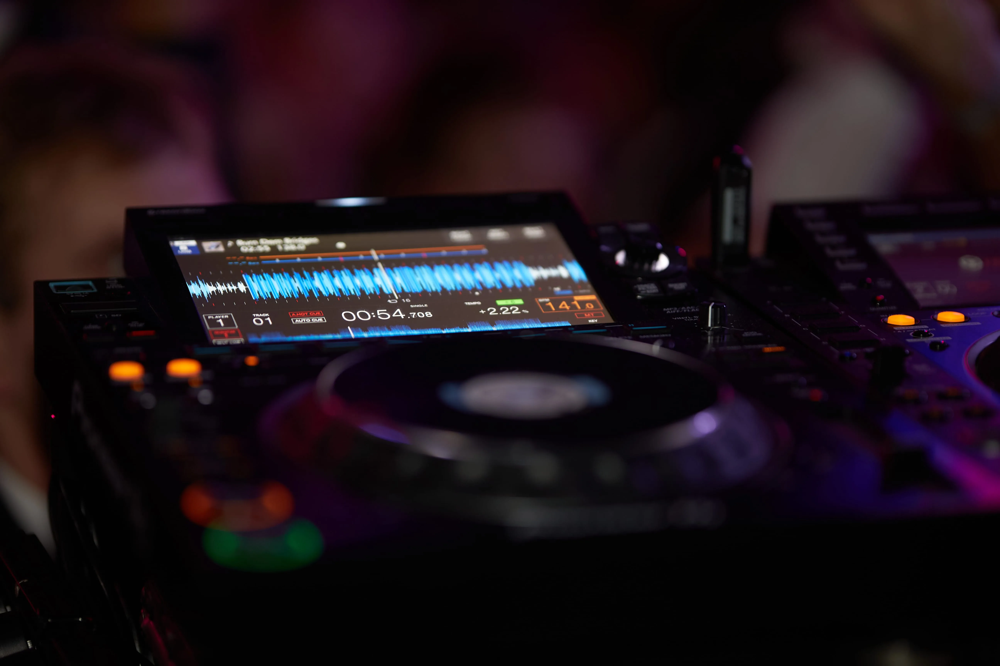

A dark room with a couple of par cans in the corner is not a vibe. Proper lighting turns a plain venue into something people actually remember. We hire out moving heads, wash fixtures, spot lights, blinders, strobes, UV, lasers, and all the atmospheric stuff like hazers and low foggers.
We also carry festoon and fairy lights for outdoor events, uplighting for venues, and pixel-mapped LED bars for something a bit different. If you're planning a school ball or a festival stage, lighting is what makes it feel real.

Moving heads, spot fixtures, wash lights, and strobes. We program shows on DMX and can run them live or set them to sound-reactive mode. Great for bands, DJs, and any show that needs a visual punch.
Haze is what makes light beams visible. We carry hazers, fog machines, low foggers for that ground-level cloud effect, UV cannons, and lasers. These are what take a lighting rig from functional to impressive.
Uplighting to wash walls in colour, festoon strings for outdoor areas, fairy lights for marquees and arches. Battery-powered wireless uplights are perfect for venues where running cable is a headache.
We design and run lighting for everything from intimate weddings to festival stages with thousands of people. We've done lighting at Two Minds Festival, Ensoc Ball, and shows with Offline Collective. We know how to programme a show that matches the music and keeps the energy right through the night.
Lighting pairs well with everything else we do. Need full AV or complete event production? We handle the lot. Check out our services page or get in touch.
Tell us about your event and we'll put a package together.
Get in touch or call 021 178 0355.
Both. We can design and programme a full lighting show for your event, or we can dry hire individual fixtures if you have your own operator. For school balls, festivals, and corporate events we typically handle the full design and operation.
Yes. We have IP-rated fixtures for outdoor use and can rig lighting on truss, trees, or temporary structures. Festoon and fairy lights are popular for outdoor weddings and garden events.
We have laser units for indoor use at events like festivals, club nights, and school balls. Lasers always come with an operator and we handle all the safety requirements.
All Ears Events Limited
20 Southwark Street, Christchurch
021 178 0355 · hello@allears.nz
Mon-Fri 9am-4pm